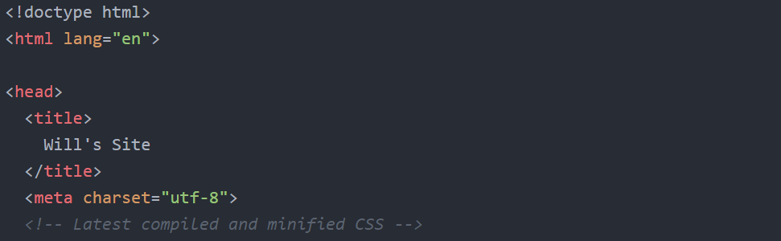
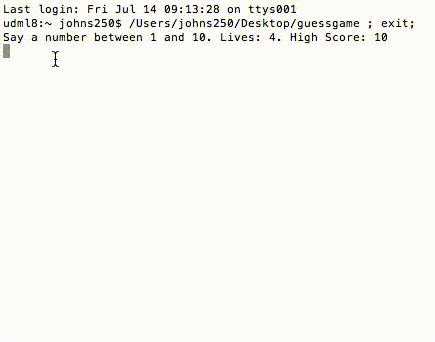
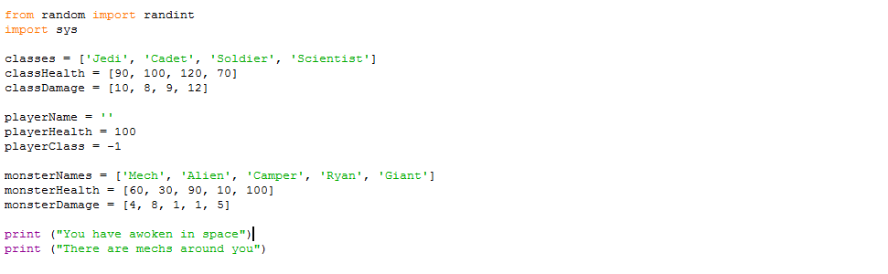
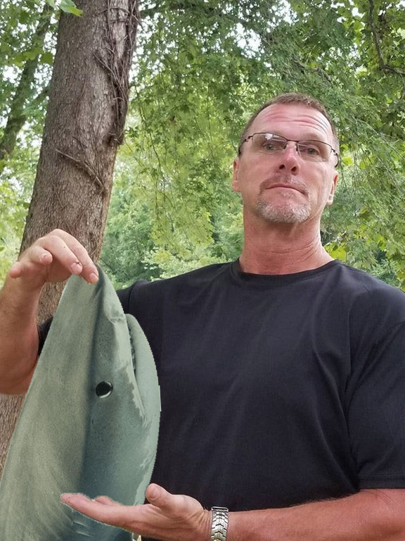
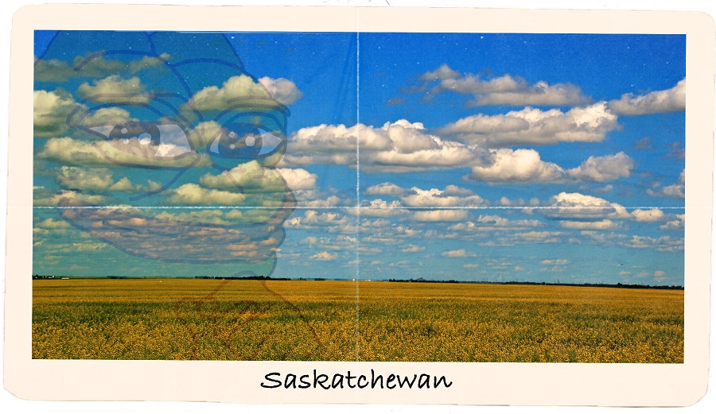
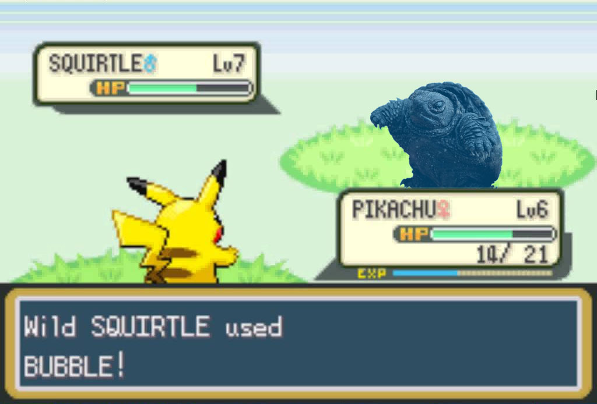

Week 1

So this week we made SO MUCH STUFF! Ever learn 3 programming languages in 3 days?it's terrifying
The first thing we worked on was making a website using Atom and GitHub. The websites were made using Hyper Text Markup Language (HTML) and Cascading Style Sheets (CSS). You can see my website here.
We also made a guessing game using C++. C++ seems really imtimidating at first, but most coding languages use similar rules and protocols, so it's easy to learn most once you've learnt one.
We used Python to make an Text-based RPG. We used arrays to incorporate random monsters with set stats, and inputs to have the player name themselves.
We used photoshop and sources from the Photoshop Battles subreddit to mess with a picture of some guy holding up a tiny fish.
We also used layers to put a old paper filter over images to make postcards.
 